PSQF 4143: Section 2

Brandon LeBeau
## title length title length
## 1 13 Going On 30 98 1 Kill Bill: Vol. 2 136
## 2 50 First Dates 99 2 King Arthur 140
## 3 Anchorman: The Legend of Ron Burgundy 104 3 Mean Girls 97
## 4 Aviator, The 170 4 Million Dollar Baby 132
## 5 Butterfly Effect, The 120 5 Napoleon Dynamite 86
## 6 Cinderella Story, A 95 6 Notebook, The 123
## 7 Collateral 120 7 Phantom of the Opera, The 143
## 8 Crash 113 8 Punisher, The 124
## 9 Dawn of the Dead 109 9 Saw 100
## 10 Dodgeball: A True Underdog Story 92 10 Shaun of the Dead 99
## 11 Eternal Sunshine of the Spotless Mind 108 11 Spider-Man 2 127
## 12 Girl Next Door, The 110 12 Troy 162
## 13 Harry Potter and the Prisoner of Azkaban 141 13 Van Helsing 132
## 14 Hellboy 132 14 Village, The 108
## 15 Incredibles, The 121 15 White Chicks 109
## Var1 Freq Var1 Freq Var1 Freq Var1 Freq
## 1 [0,5) 34 1 [0,10) 132 1 [0,20) 327 1 [0,50) 485
## 2 [5,10) 98 2 [10,20) 195 2 [20,40) 136 2 [50,100) 914
## 3 [10,15) 111 3 [20,30) 104 3 [40,60) 38 3 [100,150) 502
## 4 [15,20) 84 4 [30,40) 32 4 [60,80) 103 4 [150,200) 35
## 5 [20,25) 57 5 [40,50) 22 5 [80,100) 795
## 6 [25,30) 47 6 [50,60) 16 6 [100,120) 361
## 7 [30,35) 23 7 [60,70) 24 7 [120,140) 119
## 8 [35,40) 9 8 [70,80) 79 8 [140,160) 34
## 9 [40,45) 15 9 [80,90) 300 9 [160,180) 17
## 10 [45,50) 7 10 [90,100) 495 10 [180,200) 6
## 11 [50,55) 4 11 [100,110) 250
## 12 [55,60) 12 12 [110,120) 111
## 13 [60,65) 16 13 [120,130) 89
## 14 [65,70) 8 14 [130,140) 30
## 15 [70,75) 35 15 [140,150) 22
## 16 [75,80) 44 16 [150,160) 12
## 17 [80,85) 116 17 [160,170) 7
## 18 [85,90) 184 18 [170,180) 10
## 19 [90,95) 280 19 [180,190) 4
## 20 [95,100) 215 20 [190,200) 2
## 21 [100,105) 146
## 22 [105,110) 104
## 23 [110,115) 62
## 24 [115,120) 49
## 25 [120,125) 55
## 26 [125,130) 34
## 27 [130,135) 13
## 28 [135,140) 17
## 29 [140,145) 17
## 30 [145,150) 5
## 31 [150,155) 8
## 32 [155,160) 4
## 33 [160,165) 7
## 34 [165,170) 0
## 35 [170,175) 6
## 36 [175,180) 4
## 37 [180,185) 2
## 38 [185,190) 2
## 39 [190,195) 2
## 40 [195,200) 0
Unequal Income
##
## PG R
## [10, 25) 0 1
## [25, 40) 0 1
## [40, 55) 0 0
## [55, 70) 1 0
## [70, 85) 3 10
## [85, 100) 23 111
## [100, 115) 7 40
## [115, 130) 5 21
## [130, 145) 3 8
## [145, 160) 0 2
## [160, 175) 0 1
##
## NC-17 PG PG-13 R
## 53864 16 528 1003 3377plot of chunk hist
Distribution Shapes
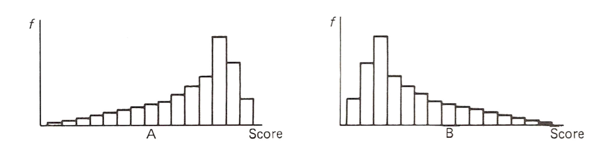 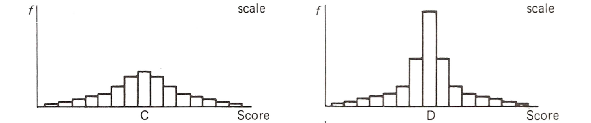
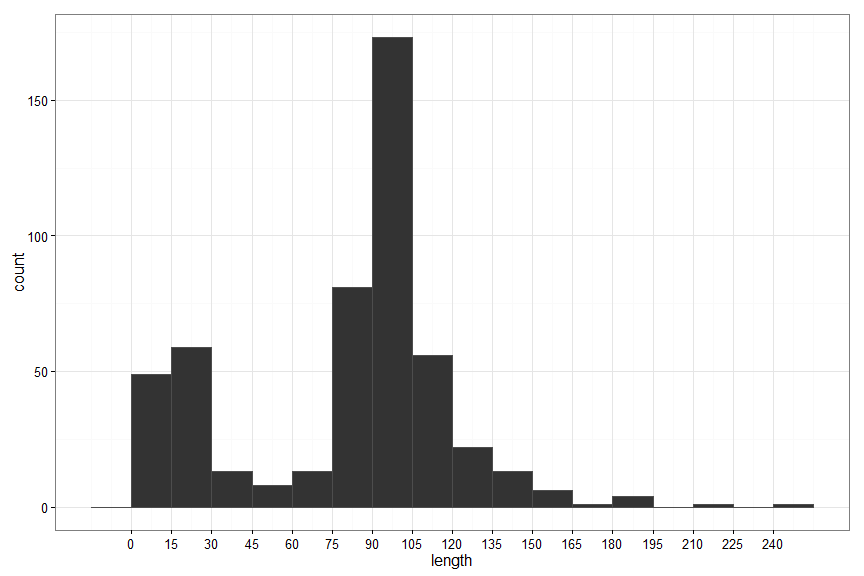 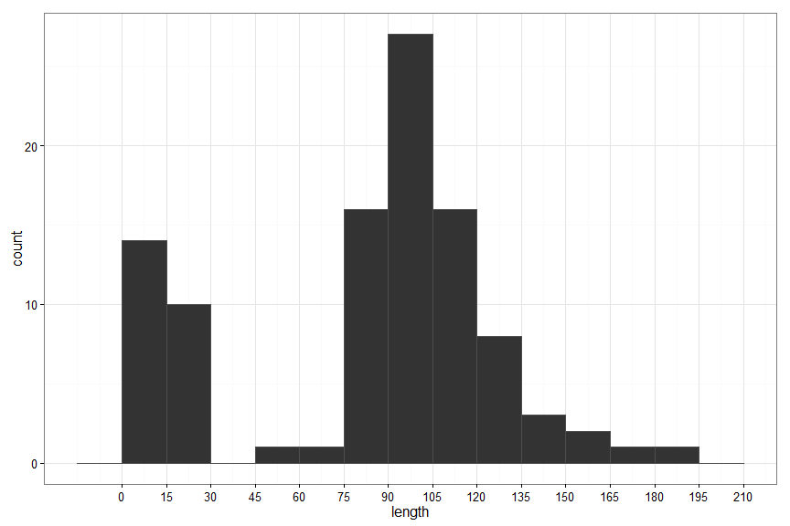 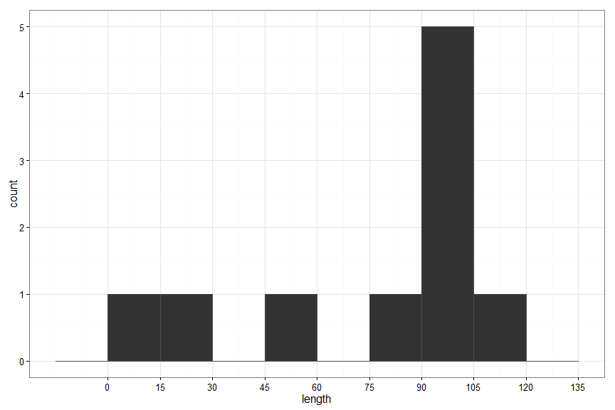
Relative Scale
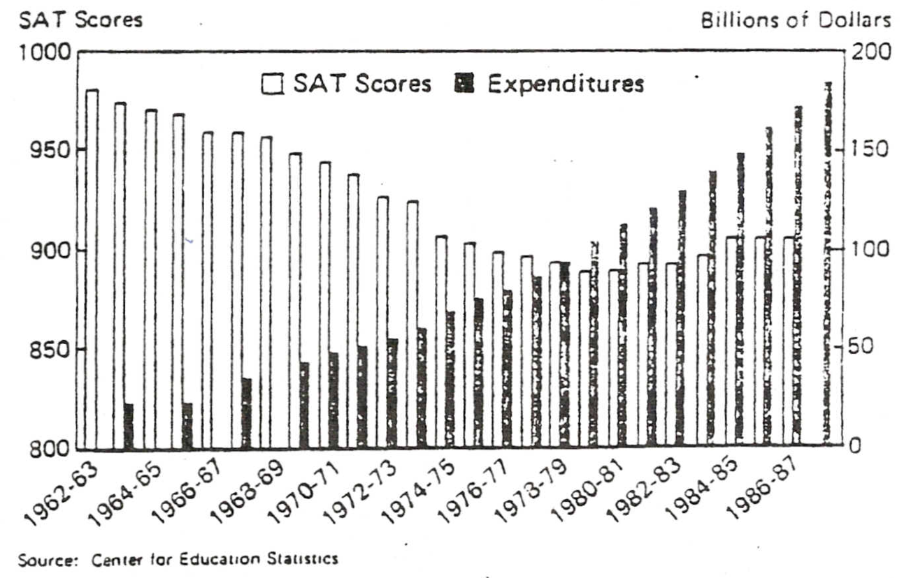 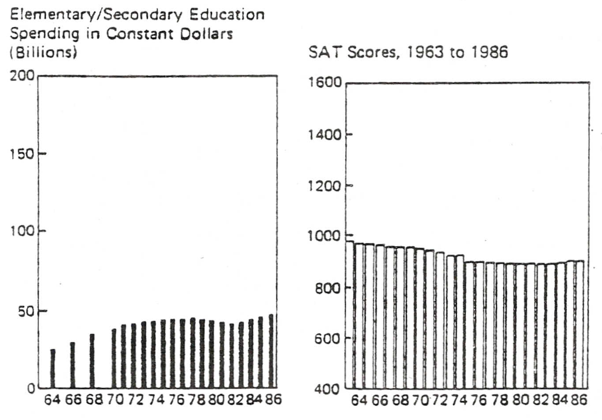
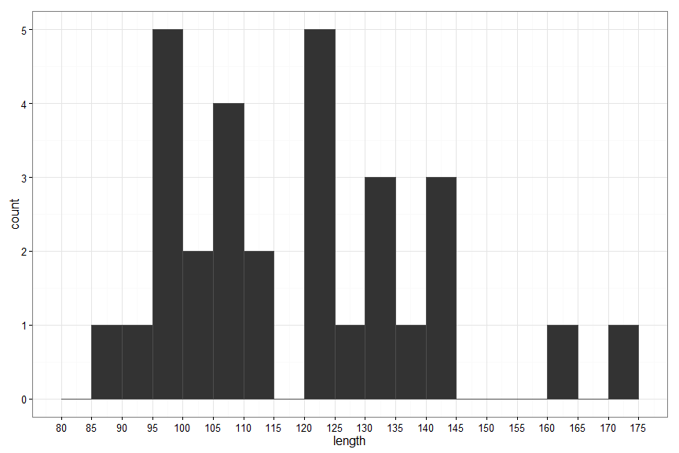 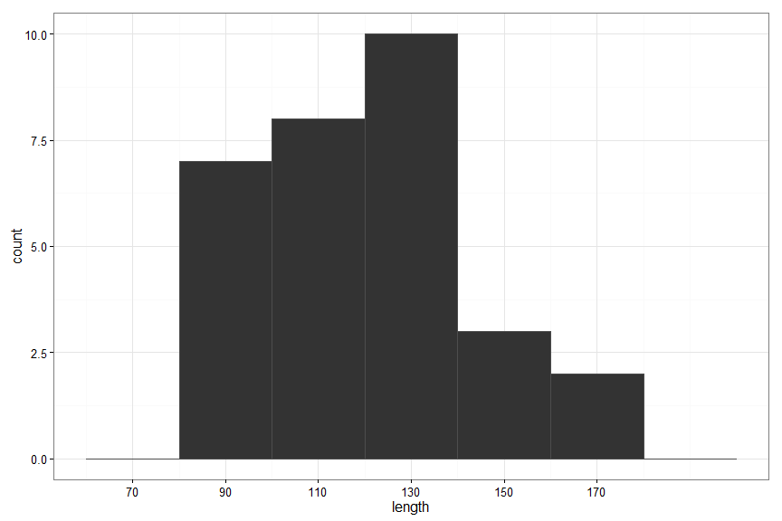 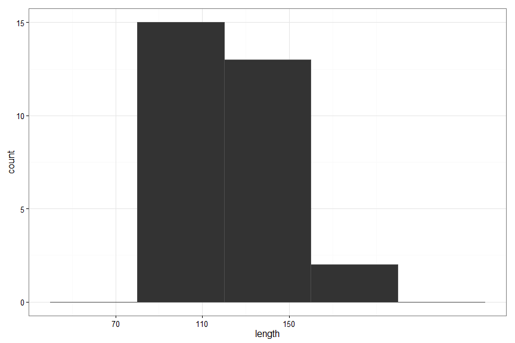
plot of chunk ogive
plot of chunk ogivepercent
Ogive Examp
plot of chunk ogivepercent2
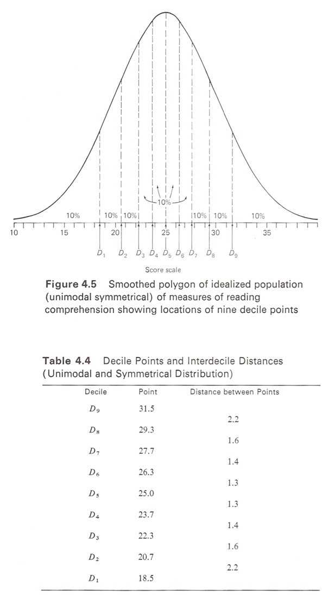 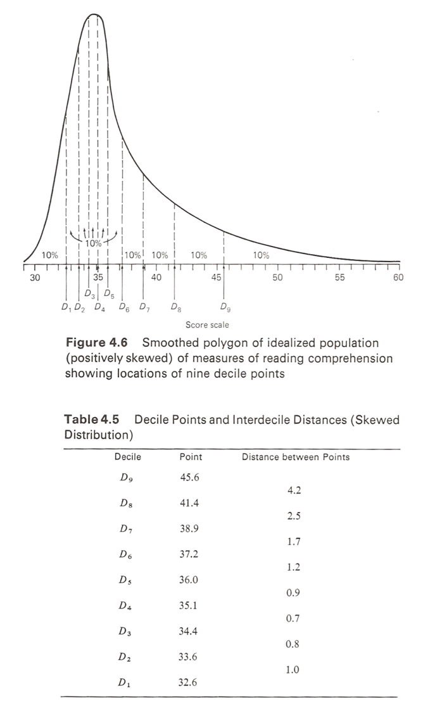 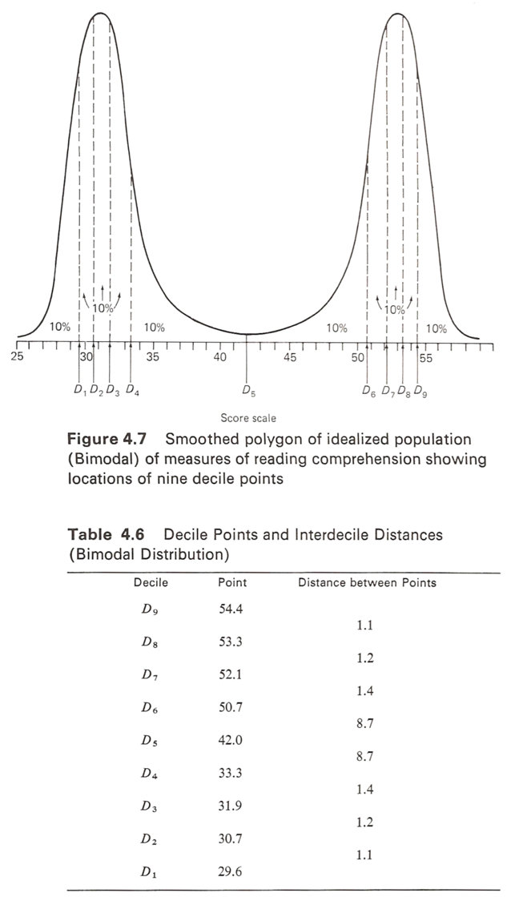
Ogive Shape
## freq cf
## 0 0
## [70,80) 0 0
## [80,90) 1 1
## [90,100) 6 7
## [100,110) 6 13
## [110,120) 2 15
## [120,130) 6 21
## [130,140) 4 25
## [140,150) 3 28
## [150,160) 0 28
## [160,170) 1 29
## [170,180) 1 30plot of chunk bar
plot of chunk pie